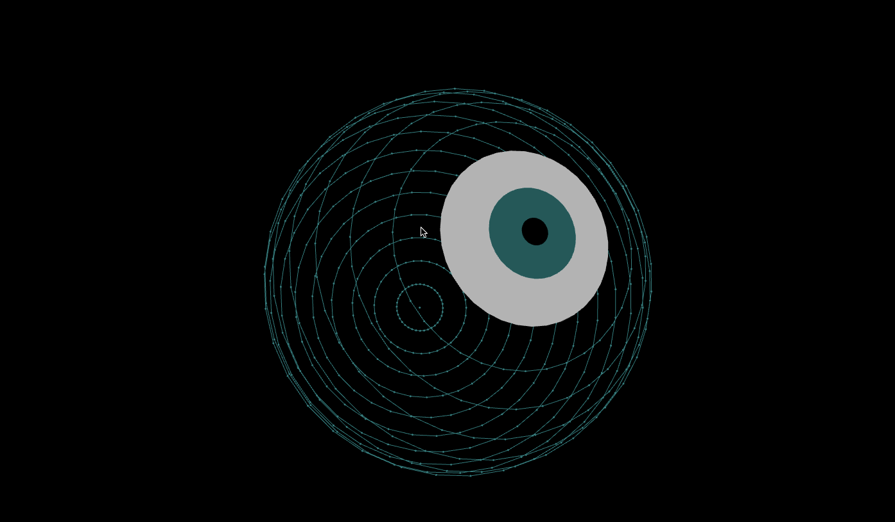

【Processing】眼球を描く
こちらの記事を参考に眼球を描いてみた。

眼球はマウスカーソルに追従するようになってる。
ざっくり解説
球体の描き方は↑に丁寧にまとめられてるのでそちらを参照すると良い。
球体はpoint()で円上に配置した点をZ軸の上に半径を変えて重ねている。
ボールを輪切りにしたようなイメージかも。
目ん玉の部分は塗りを有効にするためにbeginShape()とendShape()を用いており、vertex()によって点を描画している。
眼球描画部分のコードを以下に載せておく。
EyeBall.pde
class EyeBall {
float radius = 200;
float dir = 1;
float val = 0;
float lastX;
float lastY;
float lastZ;
EyeBall() {}
void display() {
val += 5;
for(int s = 0; s <= 180; s += 10){
float radianS = s == 0 ? radians(3) : radians(s);
float expansion = map(sin(radians(val)), -1, 1, 1, 1.5);
float z = radius * cos(radianS) * expansion;
// Eye
if (s <= 20) {
noStroke();
if (s == 20) {
fill(255, 255, 255, 180);
} else if (s == 10) {
fill(0, 128, 128, 180);
} else {
fill(0, 100);
}
// Fill eye
beginShape();
for (int t = 0; t <= 360; t += 10) {
float radianT = radians(t);
float x = radius * sin(radianS) * cos(radianT) * expansion;
float y = radius * sin(radianS) * sin(radianT) * expansion;
vertex(x, y, z);
}
endShape();
}
// Oval
else {
for(int t = 0; t <= 360; t += 10){
float radianT = radians(t);
float x = radius * sin(radianS) * cos(radianT) * expansion;
float y = radius * sin(radianS) * sin(radianT) * expansion;
stroke(0, 128, 128);
strokeWeight(3);
point(x, y, z);
// Connect points with line
if (t != 0) {
strokeWeight(1);
line(x, y, z, lastX, lastY, lastZ);
}
lastX = x;
lastY = y;
lastZ = z;
}
}
}
}
}
フルコードはこちら